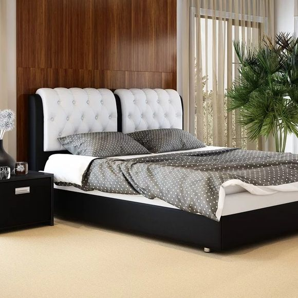

Существует различие кроватей по форме. Односпальные и полуторные спальные места зачастую имеют прямоугольную форму. Двуспальные больше похожи на квадрат. Также можно встретить овальные и круглые спальные места. Первые более приближенны к обычной форме, а вот вторые являются совершенно нестандартными.